梅吉のお正月休み [梅吉]
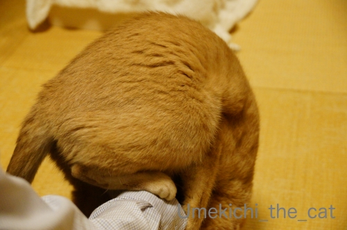
ぐる
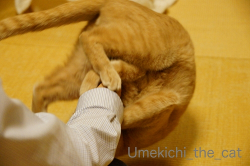
りん
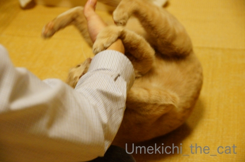
ぱっ！
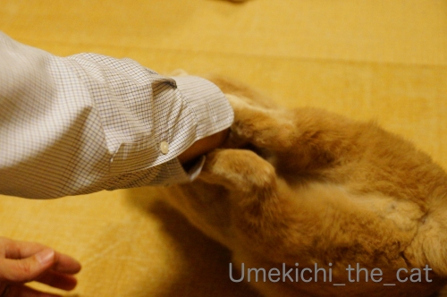
からの〜、けりけりけりけり
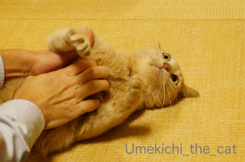
時々放心しながら休憩して

思い出した様に攻撃。
ちゃんと痛そうなところにキバを立てようとします（じゃれついてるだけです。痛いけどw ）
と、いつものお休みの日はこんな感じでおっとと梅吉のプロレスが見られるのですが・・・
インフルエンザの症状がまだ続いているおっと。
熱が38℃くらいになったり下がったりを繰り返してます。
土曜日にはかかりつけの病院で点滴をして抗生剤等を処方されました。
おっとの会社は感染症にかかったら
「発熱がおさまってからのち２日間は自宅療養すること」と決まっているそうで
（ウィルス撒き散らすから会社に来るな！ってことです）
月曜日から仕事始めですが後２〜3日はお休みかな。
モリモリじゃないけどご飯も食べているしそのうち治るでしょう＾＾
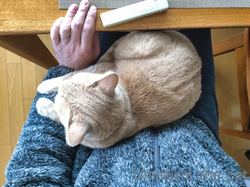
で、梅吉はナース活動に励んでます！
おっとが座るとすかさず膝に乗って温めてあげるw
・・・・・って、体温が高いので気持ち良いのだと思われます( ´艸｀)
でも、夜中時々枕元で様子を見ているし（一緒には寝ない）
なにより足タックルなどで
![[猫]](https://blog.ss-blog.jp/_images_e/101.gif) あそぶで！
あそぶで！
と誘わない。
おとーさんは よわっている
とわかっているのでしょうか( ´艸｀)
自然界なら弱っている生き物＝獲物なんでしょうけど
おとーさんじゃ獲物にならないしw 美味しくなさそうだしwww
おっとは「梅吉は心配してくれてるんだ！優しい子だねー」なんて解釈してますけど0(≧▽≦)0
今現在私にインフルエンザの症状は一切現れていません。
このまま乗り切るぞー！
 ↑ガブッと一押し↑
↑ガブッと一押し↑
北海道に出かけたこともあり年末はおせちの準備をする時間がありませんでした。
何もなくてもいい、日常の食事と同じでいいと言う話にはなったのですが・・・
それって
『私が、お正月から、キッチンに立ってあれこれしなければならない』
と言うことなんですよね！！
そんなの嫌だわーとおせちは買う事にしました。
届いたのはこちら
壱の重、弍の重の二段。
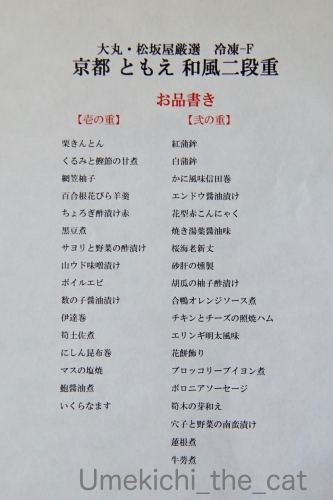
お品書き。（「和」って書いてあるけど「和洋」ですよ、大丸さんw）
お品書きを見て「あれ？」と思った方もいらっしゃるかも。
このおせち「冷凍」なんです。
今回初めておせちを買おうとして知ったことなんですが・・・
デパート等の通販で大々的に売り出されているのは「常温」のおせち。
配達日が30、31日と２日間に限られていて
配達時間指定は出来ず日にちすら選べないところがほとんど。
暮れの忙しい時期にいつ来るかわからないものを二日間ずーっと家で待つ、
とはなかなかハードルが高くないですか・・・
近所ではどのお店も31日の夕方5時くらいまでには取りに来て欲しいと。
今回は30、31日と家を空けていたし31日は家に帰れない可能性もあったので
「常温」「近所のお店」は却下。
そこで「冷凍」のおせちとなったのです。
「常温」のおせちはパウチに入った惣菜もいくつか入っていて
封を切って自分で盛り付けなければいけない場合もあるのだとか。
「冷凍」はその手間が一切ないというのも魅力でした（どんだけ動きたくないんだかw）
ネットで調べてみるとたくさんあるんですね、冷凍おせち。
散々迷ったのですがなにせ初めての注文だし、変なの届いても嫌なので
トラブルはないであろう＆なにかあっても誠実な対応が期待できる大手デパートに決定。
時間指定は出来なかったけど受取日は指定出来たので29日にしました。
ここ、うろ覚えなんですが28日から受け取れたと思います。
受け取れる期間の幅の広さが冷凍おせちのメリット？
で、届いたおせちは思ったよりもちゃんとしていてとても美味しかったです！
好みじゃないものが入っているデメリットはありますが
思いもよらない味が入っていたりしてお品書きを見ながら
「これはなんだ、あれはなんだ」と食べるのも楽しかったです。
写真はフタを開けただけで何にも手を加えてない状態です。綺麗でしょう？
汁漏れや味移りも全くなかったし食感も冷凍って感じはしませんでした。
ちなみに解凍は1日かけて冷蔵庫でと言われてます。
でも私は29日届いた時点で冷蔵庫に入れてそのまま放置。
明けて1日午前中から食べ始めました。それで全然問題なし。
おせち困った・・・の時に
「冷凍おせち」を選択肢の一つとして考えるのはありだと思いまーす。
今年の年末は・・・どうしようかなぁ。
自分で好きなものだけお重に詰めるのも捨てがたいけど出来たの買うのってすごく楽！極楽！！（爆）
もし買うのなら今度は「常温」にして今回の「冷凍」と比較してみるのも良いかも。
【追記】
うつわにヒビ疑惑のコメントをいただきましたが大丈夫！
釉の具合でそう見えるようです。
焦って実物確かめちゃいましたけどー( ´艸｀)
お雑煮だけはちゃんと作りましたよ＾＾
三つ葉はベランダのプランターで育てた自家製なのだ。
ぐる
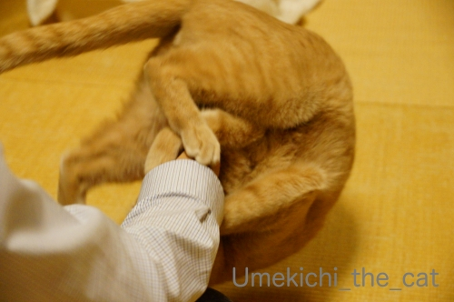
りん
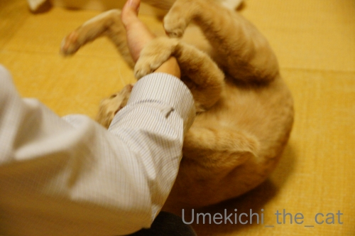
ぱっ！
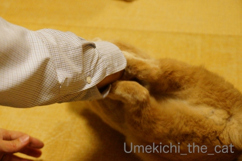
からの〜、けりけりけりけり
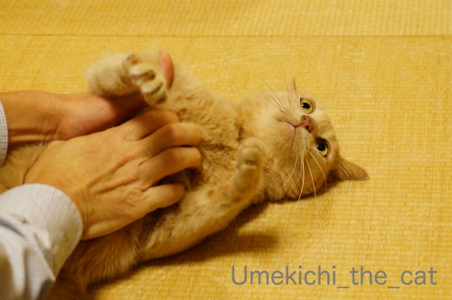
時々放心しながら休憩して
思い出した様に攻撃。
ちゃんと痛そうなところにキバを立てようとします（じゃれついてるだけです。痛いけどw ）
と、いつものお休みの日はこんな感じでおっとと梅吉のプロレスが見られるのですが・・・
インフルエンザの症状がまだ続いているおっと。
熱が38℃くらいになったり下がったりを繰り返してます。
土曜日にはかかりつけの病院で点滴をして抗生剤等を処方されました。
おっとの会社は感染症にかかったら
「発熱がおさまってからのち２日間は自宅療養すること」と決まっているそうで
（ウィルス撒き散らすから会社に来るな！ってことです）
月曜日から仕事始めですが後２〜3日はお休みかな。
モリモリじゃないけどご飯も食べているしそのうち治るでしょう＾＾
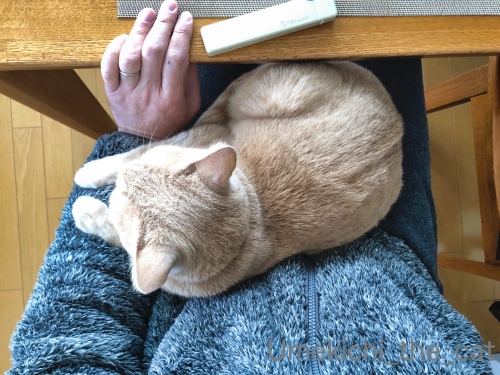
で、梅吉はナース活動に励んでます！
おっとが座るとすかさず膝に乗って温めてあげるw
・・・・・って、体温が高いので気持ち良いのだと思われます( ´艸｀)
でも、夜中時々枕元で様子を見ているし（一緒には寝ない）
なにより足タックルなどで
と誘わない。
とわかっているのでしょうか( ´艸｀)
自然界なら弱っている生き物＝獲物なんでしょうけど
おとーさんじゃ獲物にならないしw 美味しくなさそうだしwww
おっとは「梅吉は心配してくれてるんだ！優しい子だねー」なんて解釈してますけど0(≧▽≦)0
今現在私にインフルエンザの症状は一切現れていません。
このまま乗り切るぞー！
北海道に出かけたこともあり年末はおせちの準備をする時間がありませんでした。
何もなくてもいい、日常の食事と同じでいいと言う話にはなったのですが・・・
それって
『私が、お正月から、キッチンに立ってあれこれしなければならない』
と言うことなんですよね！！
そんなの嫌だわーとおせちは買う事にしました。
届いたのはこちら
壱の重、弍の重の二段。
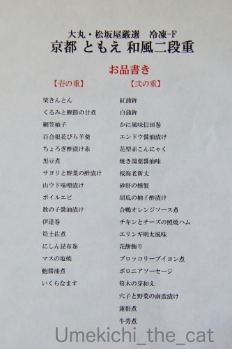
お品書き。（「和」って書いてあるけど「和洋」ですよ、大丸さんw）
お品書きを見て「あれ？」と思った方もいらっしゃるかも。
このおせち「冷凍」なんです。
今回初めておせちを買おうとして知ったことなんですが・・・
デパート等の通販で大々的に売り出されているのは「常温」のおせち。
配達日が30、31日と２日間に限られていて
配達時間指定は出来ず日にちすら選べないところがほとんど。
暮れの忙しい時期にいつ来るかわからないものを二日間ずーっと家で待つ、
とはなかなかハードルが高くないですか・・・
近所ではどのお店も31日の夕方5時くらいまでには取りに来て欲しいと。
今回は30、31日と家を空けていたし31日は家に帰れない可能性もあったので
「常温」「近所のお店」は却下。
そこで「冷凍」のおせちとなったのです。
「常温」のおせちはパウチに入った惣菜もいくつか入っていて
封を切って自分で盛り付けなければいけない場合もあるのだとか。
「冷凍」はその手間が一切ないというのも魅力でした（どんだけ動きたくないんだかw）
ネットで調べてみるとたくさんあるんですね、冷凍おせち。
散々迷ったのですがなにせ初めての注文だし、変なの届いても嫌なので
トラブルはないであろう＆なにかあっても誠実な対応が期待できる大手デパートに決定。
時間指定は出来なかったけど受取日は指定出来たので29日にしました。
ここ、うろ覚えなんですが28日から受け取れたと思います。
受け取れる期間の幅の広さが冷凍おせちのメリット？
で、届いたおせちは思ったよりもちゃんとしていてとても美味しかったです！
好みじゃないものが入っているデメリットはありますが
思いもよらない味が入っていたりしてお品書きを見ながら
「これはなんだ、あれはなんだ」と食べるのも楽しかったです。
写真はフタを開けただけで何にも手を加えてない状態です。綺麗でしょう？
汁漏れや味移りも全くなかったし食感も冷凍って感じはしませんでした。
ちなみに解凍は1日かけて冷蔵庫でと言われてます。
でも私は29日届いた時点で冷蔵庫に入れてそのまま放置。
明けて1日午前中から食べ始めました。それで全然問題なし。
おせち困った・・・の時に
「冷凍おせち」を選択肢の一つとして考えるのはありだと思いまーす。
今年の年末は・・・どうしようかなぁ。
自分で好きなものだけお重に詰めるのも捨てがたいけど出来たの買うのってすごく楽！極楽！！（爆）
もし買うのなら今度は「常温」にして今回の「冷凍」と比較してみるのも良いかも。
【追記】
うつわにヒビ疑惑のコメントをいただきましたが大丈夫！
釉の具合でそう見えるようです。
焦って実物確かめちゃいましたけどー( ´艸｀)
お雑煮だけはちゃんと作りましたよ＾＾
三つ葉はベランダのプランターで育てた自家製なのだ。

カフェオレ色の梅吉

梅吉 2023年8月10日 永眠


梅吉と出会った譲渡会

犬猫の理由なき殺処分ゼロ
妄想広告
UMEKICHI 光

爆発的に早い！
時々攻撃的！
Thanks to Mr.Boss365
爆発的に早い！
時々攻撃的！
Thanks to Mr.Boss365

梅吉さん、みごとな「ぐる」「りん」「ぱ」！
マイペースで休憩入れながら！ってのも、いいですね～＾＾
おっとさん、まだ熱があるのですね。
感染症の人は休まないと！それが正しいですよ～＾＾
今日バスの中で咳をしている人がいて、そのたびに嫌そうにぼやく人が別にいました＾＾；
にゃんこは具合が悪いときに寄り添ってくれるところ、ありますよ。
弱っている波長と猫恋しい気分とは似ているのではないかという気もしてます。気弱なときに知らない猫が突然足元に寄り添ってくることがあるので＾＾；
by sana (2020-01-06 00:53)
梅吉さんおとーさんの具合を計りながらのお相手お利口さんですね~。
ちぃさんに移らなくて良かった。免疫力高いですね。私は必ず移されるのです。
by zombiekong (2020-01-06 01:05)
注文したおせちが届かなかったという記事を見ました。
ちゃんと届いて良かったですね＾＾
どうでも良い事ですけど、
最後の写真の器、ヒビが入ってるような？
そういう模様だったらゴメンナサイ＾＾；
by ぽちの輔 (2020-01-06 06:43)
梅吉さん、腕に絡み付いてからのぐるりんぱ遊び、
美しい技を見せてくれますねぇ=(^.^)=
お父さんが弱ってるのにちゃんと気を使って
遊びに誘わず、ナース活動する梅吉さんはさすがです( ^ω^ )
うちもかみさん相手にはナース活動しますが、
私には寄ってきません(ｰ ｰ;)
ちぃさん、このままインフルもらわないようガンバです*\(^o^)/*
by ニッキー (2020-01-06 07:02)
出遅れましたが、本年もよろしくお願いします！
おとーさん、正月早々大変ですね。お大事に～！
冷凍おせち、かなりの美しさです。
日付指定できるのは絶対ありがたい。
うちの娘は、こういうのに入れる食材を卸したりしてるんで
どこ産の何がどうたら、のウンチクがすごいです(^_^;)
by よーちゃん (2020-01-06 07:04)
ぐるりんぱ♪ 見事です(#^.^#)
我が家はお節とは無縁の生活（笑
でも義実家でここ数年、
お取り寄せてくれるので食べるんですけど♪
冷凍お節もあるんですね！
by きぃ (2020-01-06 08:20)
梅吉さんプロレスにいそしんでいますね！
インフルエンザは今は熱が下がってから3日は会社に出社禁止になっている所が多いですね(^^)
by ma2ma2 (2020-01-06 08:30)
そうそう、ニャンコって弱っている人がわかるんですよねー。
いたわってくれるの^m^
実家のミイちゃんは、元々、母の猫なのですが、母が最初に怪我して寝込んだ時、枕元にねずちゅーのおもちゃをお見舞いに持ってきてくれたんですよ～。
で、動けない母の目の前でお尻を向ける。あ、これはお見舞いじゃないか(笑)
ちぃさん、インフルうつらなくて済んだのかな。潜伏期間も考えるとまだ心配ですね。
会社は今日からですが、主力戦力の子が、いきなりインフルでお休み。
私も家でやってた仕事の区切りが悪いので、午前は在宅勤務にしちゃった。
(働けよ！＞自分)
by ChatBleu (2020-01-06 09:09)
こんにちは。
梅吉君、正月も変わりなく元気そうで良い感じです。
ご主人、インフル大丈夫ですか？大手企業は「自宅療養」必須みたいです。
お大事にして下さい。ちぃさん介抱です。踏ん張って下さい！！
ナース活動！！梅吉君の方が癒し効果？は高そうです（笑）
ちぃさん？油断大敵です。忘れた頃にインフル来ますのでお気をつけ下さい。
「日常の食事」なる程です。食事作りは大変と思います。
立派なお節！！冷凍には見えない？「大手デパート」は正解ですね！！
大手デパート、以前日時の配達ミスで、店員自ら「手持ち」で持ってきてくれました。
信用を大事にするお店の選択は重要と感じます。
美しいお雑煮。お店かと？間違えそうですね！？(=^･ｪ･^=)
by Boss365 (2020-01-06 11:45)
いいなあ、私もぐるぐる、けりけり、がぶがぶされたい…。
放心した顔もかわいい♡
インフルで高熱はしんどいけど、梅吉ナースが看病してくれるなら
つらさも和らぎますね。
by liang (2020-01-06 12:04)
あけおめです！
インフル辛いよね、私２年前になったからあと３年はかからない説w
それと、毎年この時期風邪ひくんですが、エキナセアと言うサプリを飲んでから絶好調でっせ！お試しあれ。
by じゅらまろ (2020-01-06 12:20)
以前、コメントを戴いたことがあります。懐かしくなって、訪問しました。「ブログの終活」を考える今日この頃です。（笑） 今年が、良き一年となりますことをお祈り申し上げます。
by Ujiki.oO (2020-01-06 12:26)
梅吉さん、でんぐり返し上手！！
フィニッシュのチラ牙まで含めて完璧ですね(#^^#)
さらにさらに、おとーさんの体調見ながら遊んであげるとはなんて親孝行♪
ウチのはダメ・・家にいるなら遊ぼ～っ誘いに来るので、本当にしんどいときは寝室のドアを閉めて寝ます^^;
熱があがったり、下がったり、私もそうだったんですが、結構きついです。休んで正解、以前の職場で同じチーム8人全滅したことあります。
おとーさん、しっかり休んで治してくださいね！
冷凍おせちは解凍して盛り付けるのかと思ったら、そのままなんですね！
とてもきれいでビックリ。美味しいなら尚良しです♪
お正月、キッチンには出来るだけ立ちたくないですもんね^^
by ゆきち (2020-01-06 12:42)
冷凍おせちの詳細レポートよくわかりました(^^
選択肢の一つとして入れておくのもアリみたいですね。
写真を見る限りとても色鮮やかで解凍しただけとは思えない盛り付け♪
梅吉さん、ぐるりんぱからの胸元をごにょごにょされて天井を見ている
写真がツボでしたｗ そこから一気に反撃ですね。
お父さんの看護活動もあっぱれです。弱っているも者には優しいお猫様。
それはそうと、せっかくのお正月休みを病床に伏していたお父さんは、
今日は病院へ行かれたのでしょうか。ちぃさんに伝染せず乗り切れることを
お祈りいたします(-人-）
by marimo (2020-01-06 13:19)
大人の38度はきついですよねぇ。
共倒れになったら大変！
梅吉さんにご飯作ってもらうわけにもいかないし^^;
おかーさんがご無事に過ごせますように。
今年はも〜家、おせち無しでした。
お雑煮は作るよ、と婆が言うので、どんなもんかいと思っていたら
キャベツのざく切りの中にお餅が浮いていました…。
まぁあれだ、お雑煮、だよね〜と食べました(ｰｰ;)
by も〜 (2020-01-06 18:00)
常温お節って、袋に入ってるやつを入れ直さなきゃいけないんじゃ？と
不信感を持っていましたが、やっぱりそうなんですね。
冷凍技術上がってますし、冷凍お節、いい考えだと思います。
そのまま解凍だけでいいって、楽でいいですね。
梅吉さんは、ちゃんと気を使ってくれるんですね。
近頃、インフルでも仕事に出てこい、とかいうパワハラとか聞こえて
いましたが、治ってから２、３日休んでいいって、まともな会社は
そうですよね。他の人に移さないほうがいいに決まってます。
でも、病気で寝正月は、ちょっと悲しいですね。
by nachic (2020-01-06 19:31)
おおっ見事なグルリンパ！！
38度は辛い。。。おっと様、お大事に。
梅吉さん、発熱を忘れるようにじゃれてるのかな？ ^^)
冷凍のおせちってあるのですね。知りませんでした。
冷凍ならお味も大丈夫だと思いますが、そのうち技術が発達してフリーズドライおせちなんてでてくるのかな？ ^^;;
お雑煮、美味しそう。彩りもいいですね。
by yes_hama (2020-01-06 21:38)
冷凍おせちこんな感じなんですね
姑が嫌がるのでこういうのは頼んだことがないのですが
大手百貨店クオリティだとヘタにあれこれ買うよりも
手間いらずで美味しいのが食べられそうですね
by 藤並 香衣 (2020-01-06 23:03)
おとーさんは美味しくなさそう(笑)
いやいやもっと弱るのを待ってるだけです(爆)
人の治りかけが移り時とか言いますしどうぞご自愛ください♪
そして目にも鮮やかな豪華なおせち料理！
こんなの出されたら私のがショボく見えるじゃないですか(≧▽≦)
来年は三つ葉収穫に行かせてもらいますね☆
by yamatonosuke (2020-01-07 01:15)
インフルエンザはお辛いでしょうね。
お大事になさってください。
by ニコニコファイト (2020-01-07 07:23)
梅吉さん、渾身の看護ですね。
インフルエンザは辛いですから心強かったでしょう(^^)
冷凍おせちもなかなか良いですね～。
うちは今年に限っておせちや止めて、それぞれ好きな物を買って食べた年末年始でした。おせちはどうしても余ってしまいますから。歳を感じます(^_^;)
by kou (2020-01-07 12:16)
ご主人様、いかがでしょうか？
我が夫は喉が痛いと
（イヤイヤ）年末に病院にかかりました。
高齢者なので検査だ、点滴だ１週間分の薬だと結構な金額を払いました。
が、夫は2日薬を飲んで、初歩き、初詣に
出かけました。
わがままは健在です（笑）
我が家も冷凍おせち、31日の夕方に届けてもらって、１２時間冷蔵庫で解凍するものでした。
我が家のも美味しかったです。
クルミっ子、高島屋ですか！
これからは送料がかかりません（笑）
静かな新年を迎えられて幸せでしたね。
by kiki (2020-01-07 15:01)
ぐるりんぱ！
梅吉くんは元気！！
うちのは寝てばかりだよー^ｍ^
ちぃさん、インフルも寄せ付けないなんて凄いです。
わたしだったら、完全うつる。。。ってかうつったし(笑)
20年前くらいに、わたしがインフルになったとき、相方くんはうつりませんでしたｗ
冷凍おせち、良さそうだね^^
今年は東京で過ごしたからおせち買おうかなっても思ったんだけど、
結局はカニ、かずのこ、伊達巻き、コンブ巻き、くりきんとんを買っただけで、重箱にも入れず普通に出しちゃいました(笑)
すぐに食べ終わっちゃったので、普通に台所に立つ羽目になったよぉ
by リュカ (2020-01-08 12:56)
昨年はご訪問＆nice・コメントありがとうございました(^^♪
今年もよろしくお願い申し上げます。
梅吉ちゃん膝のうえに大人しくのっていますね
めんこーい(#^^#)
インフルエンザお大事に・・。
by ぱだおくん (2020-01-08 17:40)